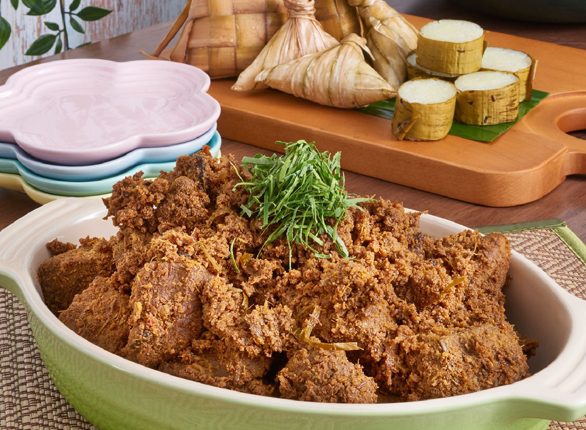

Home
Rendang Tok

Description
Rendang Tok is a rich, dark, and dry traditional beef rendang from Perak, Malaysia.
Ingredients
- 2kg beef (cut into 2 inch x 2 inch cubes)
- 150ml cooking oil
INGREDIENTS A (blend until fine)
- 130g dried chili paste
- 150g shallots
- 100g galangal (sliced)
- 30g ginger (sliced)
- 50g fresh turmeric (sliced)
- 50g garlic
INGREDIENTS B
- 3 cups coconut milk mixed with 2 cups water
- 3 stalks lemongrass (crushed)
- 30g sugar
- 15g salt
- 250g dry-roasted and pounded coconut (Kerisik)
- 200g coconut shavings (dry-roasted until lightly browned)
- 2 turmeric leaves (sliced)
INGREDIENTS C (fry until aromatic without oil & grind until powdery)
- 15g cumin
- 15g coriander seeds
- 15g fennel seeds
INGREDIENTS D
- 3 cinnamon sticks
- 5 star anise
- 10 cloves
- 30g black peppercorns (crushed)
Steps
- Heat the cooking oil in the Le Creuset Marmite 28cm pot over low heat. Stir in Ingredients A and D, fry until fragrant.
- Add in beef and Ingredients C, stir well, stirring occasionally for 45 minutes.
- Lower the heat, add in Ingredients B, and stirring continuously, let simmer for approximately 1 hour until the gravy is thick and oil appears.